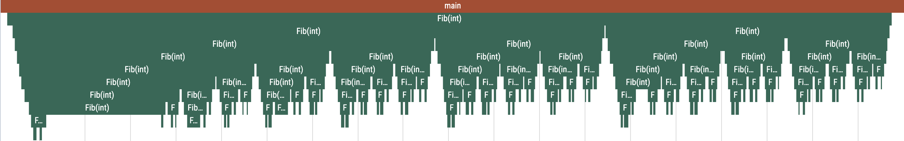
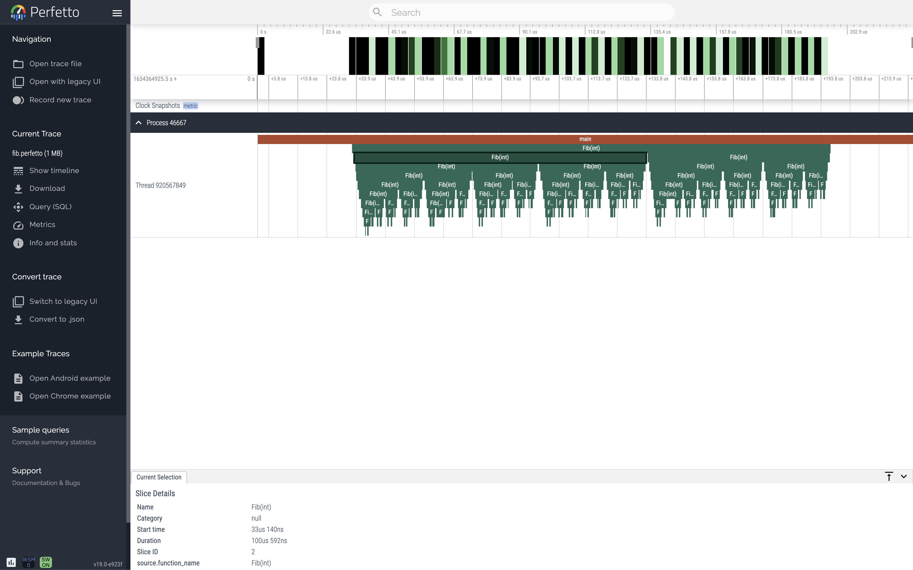
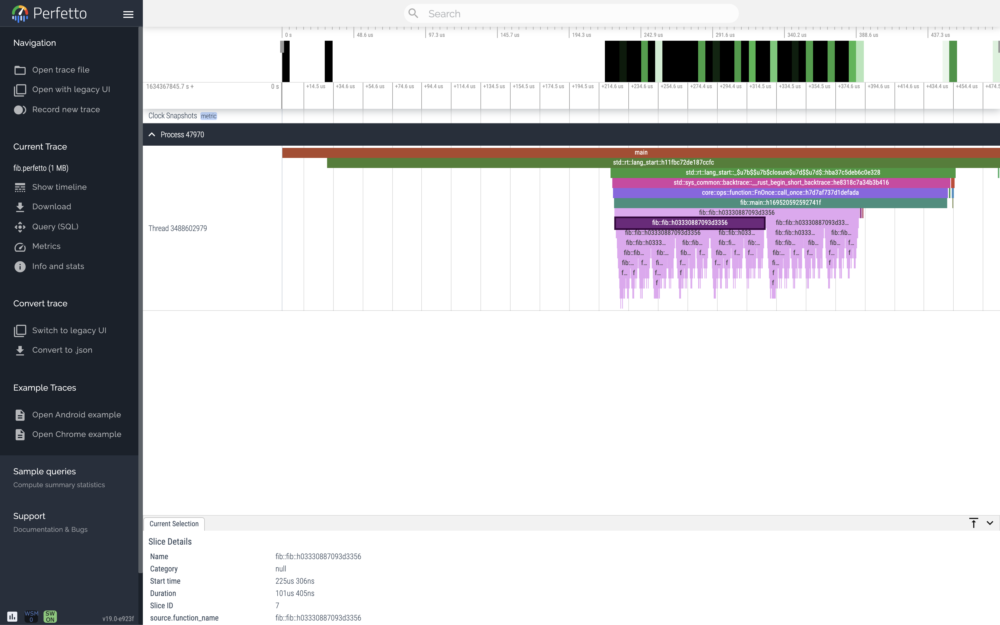
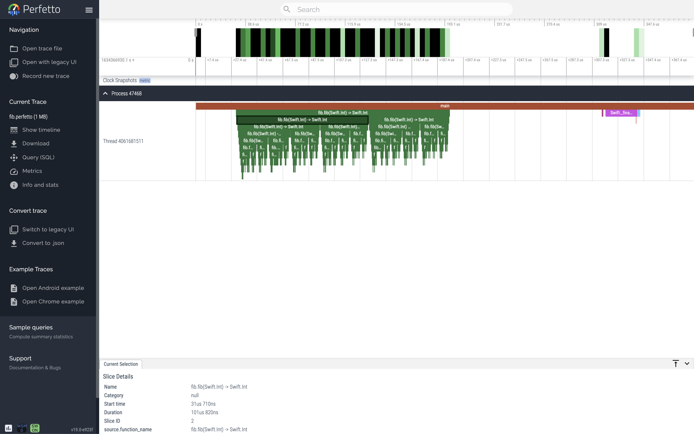
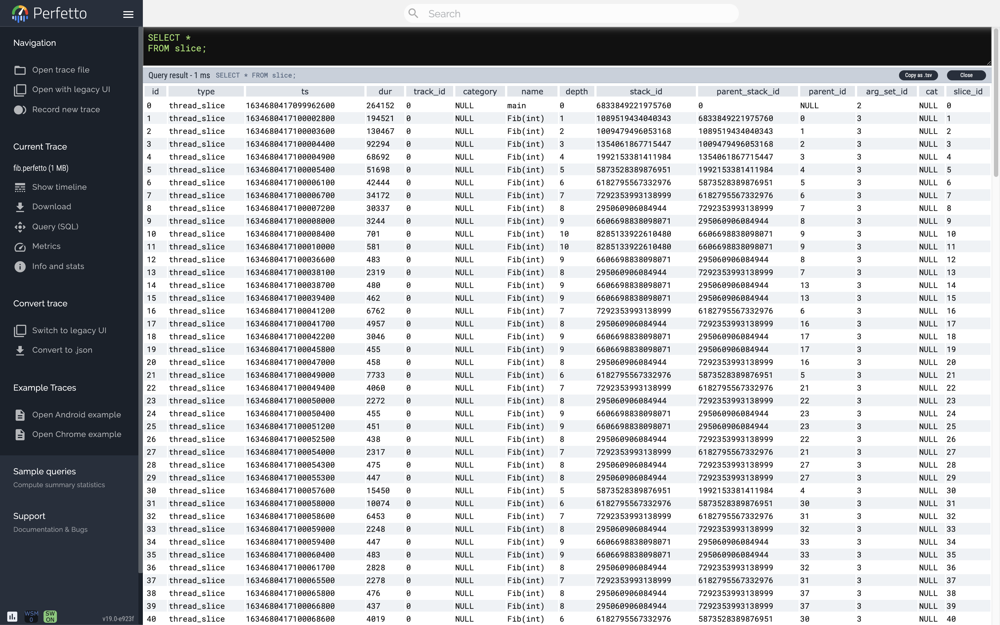
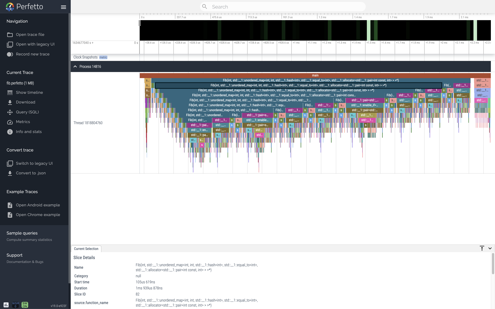
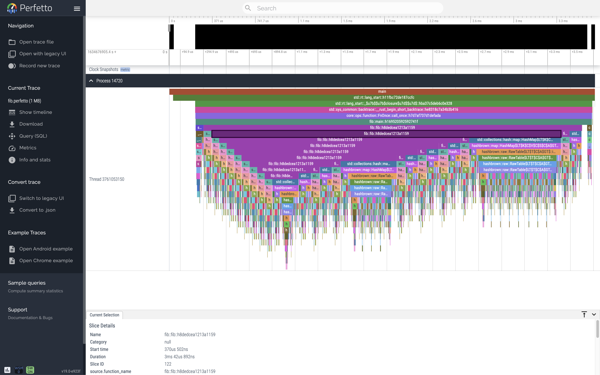
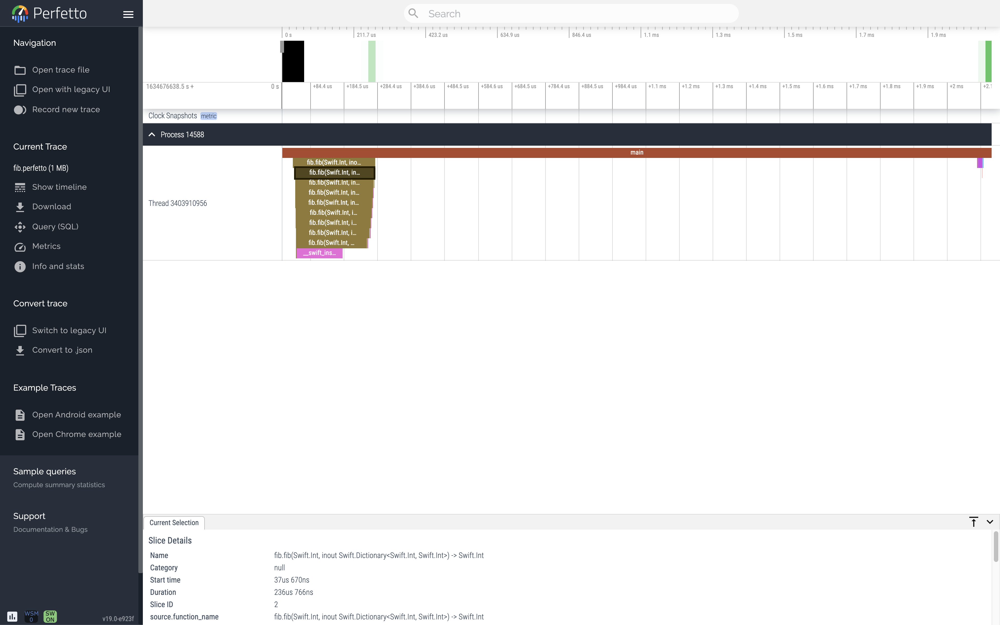

Fibonacci
This tutorial uses Spoor to instrument a program that calculates Fibonacci numbers.
You'll learn Spoor's pipeline to automatically inject instrumentation into your source code, build and run your Spoor-instrumented program, symbolize the trace, and visualize and analyze your symbolized trace using Perfetto.

0. Prerequisites
0.1 Setup and dependencies
You will need:
- Spoor's toolchain including
spoor_opt: Compiler instrumentationlibspoor_runtime.a: Runtime librarylibspoor_runtime_default_config.a: Runtime library default configurationspoor: Postprocessing tool
clang++,rustc,swiftc, or another LLVM-based compiler of your choice.clang++to assemble the IR and link in the standard library.- A hop, a skip, and a can-do attitude.
Version
This tutorial uses the following tools. Your mileage may vary with newer or older versions.
spoor_opt
spoor_opt --version
spoor_opt 0.0.0
Based on LLVM 13.0.1
libspoor_runtime
0.0.0
spoor
spoor --version
spoor 0.0.0
clang++
clang++ version
clang version 12.0.1
clang++ version
clang version 12.0.1
rustc --version
rustc 1.55.0
swiftc --version
swift-driver version: 1.26.9 Apple Swift version 5.5
0.2 Write your code
The Fibonacci numbers, denoted \(F_n\), form a sequence where each number is the sum of the two preceding ones, starting from 0 and 1. That is,
This recursive definition can be implemented as follows:
// fib.cc
#include <cstdio>
auto Fib(const int n) -> int {
if (n < 2) return n;
return Fib(n - 1) + Fib(n - 2);
}
auto main() -> int {
constexpr auto n = 46;
const auto f = Fib(n);
printf("Fib(%d) = %d\n", n, f);
}
// fib.rs
fn fib(n: i64) -> i64 {
if n < 2 {
return n;
}
return fib(n - 1) + fib(n - 2)
}
fn main() {
let n = 10;
let f = fib(n);
println!("Fib({}) = {}", n, f);
}
// fib.swift
import Foundation
func fib(_ n: Int) -> Int {
if n < 2 {
return n
}
return fib(n - 1) + fib(n - 2)
}
let n = 10
let f = fib(n)
print("Fib(\(n)) = \(f)")
Sanity test
Build and run your (uninstrumented) code to make sure that everything works as expected.
clang++ fib.cc -o fib && ./fib
rustc fib.rs && ./fib
swiftc fib.swift && ./fib
Fib(10) = 55
1. Instrument your code
Spoor works by instrumenting LLVM IR, a common intermediate representation between your high-level source code and machine code for LLVM-based languages.
1.1 Emit IR
Emit LLVM IR instead of compiling down to an object file.
clang++ fib.cc -emit-llvm -S -o fib.ll
rustc fib.rs --emit llvm-ir -o fib.ll
swiftc fib.swift -emit-ir -o fib.ll
Debug data
Compile with debug data (-g) to include the source file and line number in
the symbolized trace.
Inspect the file fib.ll to view the (uninstrumented) IR. Each language's
emitted IR is different due to the nature of the source language and its
compiler frontend, but they are all functionally equivalent.
; fib.ll
define dso_local i32 @_Z3Fibi(i32 %0) #0 {
%2 = alloca i32, align 4
%3 = alloca i32, align 4
store i32 %0, i32* %3, align 4
%4 = load i32, i32* %3, align 4
%5 = icmp slt i32 %4, 2
br i1 %5, label %6, label %8
6: ; preds = %1
%7 = load i32, i32* %3, align 4
store i32 %7, i32* %2, align 4
br label %16
8: ; preds = %1
%9 = load i32, i32* %3, align 4
%10 = sub nsw i32 %9, 1
%11 = call i32 @_Z3Fibi(i32 %10)
%12 = load i32, i32* %3, align 4
%13 = sub nsw i32 %12, 2
%14 = call i32 @_Z3Fibi(i32 %13)
%15 = add nsw i32 %11, %14
store i32 %15, i32* %2, align 4
br label %16
16: ; preds = %8, %6
%17 = load i32, i32* %2, align 4
ret i32 %17
}
; fib.ll
define internal i64 @_ZN3fib3fib17h03330887093d3356E(i64 %n) unnamed_addr #1 {
start:
%0 = alloca i64, align 8
%_2 = icmp slt i64 %n, 2
br i1 %_2, label %bb1, label %bb2
bb2: ; preds = %start
%1 = call { i64, i1 } @llvm.ssub.with.overflow.i64(i64 %n, i64 1)
%_7.0 = extractvalue { i64, i1 } %1, 0
%_7.1 = extractvalue { i64, i1 } %1, 1
%2 = call i1 @llvm.expect.i1(i1 %_7.1, i1 false)
br i1 %2, label %panic, label %bb3
bb1: ; preds = %start
store i64 %n, i64* %0, align 8
br label %bb8
bb8: ; preds = %bb7, %bb1
%3 = load i64, i64* %0, align 8
ret i64 %3
bb3: ; preds = %bb2
; call fib::fib
%_4 = call i64 @_ZN3fib3fib17h03330887093d3356E(i64 %_7.0)
br label %bb4
panic: ; preds = %bb2
; call core::panicking::panic
call void @_ZN4core9panicking5panic17h2c89bafc52ad2c2fE([0 x i8]* nonnull align 1 bitcast ([33 x i8]* @str.1 to [0 x i8]*), i64 33, %"std::panic::Location"* align 8 dereferenceable(24) bitcast (<{ i8*, [16 x i8] }>* @alloc38 to %"std::panic::Location"*))
unreachable
bb4: ; preds = %bb3
%4 = call { i64, i1 } @llvm.ssub.with.overflow.i64(i64 %n, i64 2)
%_11.0 = extractvalue { i64, i1 } %4, 0
%_11.1 = extractvalue { i64, i1 } %4, 1
%5 = call i1 @llvm.expect.i1(i1 %_11.1, i1 false)
br i1 %5, label %panic1, label %bb5
bb5: ; preds = %bb4
; call fib::fib
%_8 = call i64 @_ZN3fib3fib17h03330887093d3356E(i64 %_11.0)
br label %bb6
panic1: ; preds = %bb4
; call core::panicking::panic
call void @_ZN4core9panicking5panic17h2c89bafc52ad2c2fE([0 x i8]* nonnull align 1 bitcast ([33 x i8]* @str.1 to [0 x i8]*), i64 33, %"std::panic::Location"* align 8 dereferenceable(24) bitcast (<{ i8*, [16 x i8] }>* @alloc40 to %"std::panic::Location"*))
unreachable
bb6: ; preds = %bb5
%6 = call { i64, i1 } @llvm.sadd.with.overflow.i64(i64 %_4, i64 %_8)
%_12.0 = extractvalue { i64, i1 } %6, 0
%_12.1 = extractvalue { i64, i1 } %6, 1
%7 = call i1 @llvm.expect.i1(i1 %_12.1, i1 false)
br i1 %7, label %panic2, label %bb7
bb7: ; preds = %bb6
store i64 %_12.0, i64* %0, align 8
br label %bb8
panic2: ; preds = %bb6
; call core::panicking::panic
call void @_ZN4core9panicking5panic17h2c89bafc52ad2c2fE([0 x i8]* nonnull align 1 bitcast ([28 x i8]* @str.2 to [0 x i8]*), i64 28, %"std::panic::Location"* align 8 dereferenceable(24) bitcast (<{ i8*, [16 x i8] }>* @alloc42 to %"std::panic::Location"*))
unreachable
}
; fib.ll
define hidden swiftcc i64 @"$s3fibAAyS2iF"(i64 %0) #0 {
entry:
%n.debug = alloca i64, align 8
%1 = bitcast i64* %n.debug to i8*
call void @llvm.memset.p0i8.i64(i8* align 8 %1, i8 0, i64 8, i1 false)
store i64 %0, i64* %n.debug, align 8
%2 = icmp slt i64 %0, 2
br i1 %2, label %3, label %4
3: ; preds = %entry
br label %22
4: ; preds = %entry
%5 = call { i64, i1 } @llvm.ssub.with.overflow.i64(i64 %0, i64 1)
%6 = extractvalue { i64, i1 } %5, 0
%7 = extractvalue { i64, i1 } %5, 1
%8 = call i1 @llvm.expect.i1(i1 %7, i1 false)
br i1 %8, label %24, label %9
9: ; preds = %4
%10 = call swiftcc i64 @"$s3fibAAyS2iF"(i64 %6)
%11 = call { i64, i1 } @llvm.ssub.with.overflow.i64(i64 %0, i64 2)
%12 = extractvalue { i64, i1 } %11, 0
%13 = extractvalue { i64, i1 } %11, 1
%14 = call i1 @llvm.expect.i1(i1 %13, i1 false)
br i1 %14, label %25, label %15
15: ; preds = %9
%16 = call swiftcc i64 @"$s3fibAAyS2iF"(i64 %12)
%17 = call { i64, i1 } @llvm.sadd.with.overflow.i64(i64 %10, i64 %16)
%18 = extractvalue { i64, i1 } %17, 0
%19 = extractvalue { i64, i1 } %17, 1
%20 = call i1 @llvm.expect.i1(i1 %19, i1 false)
br i1 %20, label %26, label %21
21: ; preds = %15
br label %22
22: ; preds = %3, %21
%23 = phi i64 [ %18, %21 ], [ %0, %3 ]
ret i64 %23
24: ; preds = %4
call void @llvm.trap()
unreachable
25: ; preds = %9
call void @llvm.trap()
unreachable
26: ; preds = %15
call void @llvm.trap()
unreachable
}
Exercise
Identify the Fibonacci function's base case and recursive call in the LLVM IR.
1.2 Inject instrumentation
Pass fib.ll to spoor_opt to inject instrumentation into the IR.
spoor_opt \
fib.ll \
--output_file=fib_instrumented.ll \
--output_symbols_file=fib.spoor_symbols \
--output_language=ir
Spoor injects a call to _spoor_runtime_LogFunctionEntry at the start of every
function and a call to _spoor_runtime_LogFunctionExit before each function
return.
; fib_instrumented.ll
define dso_local i32 @_Z3Fibi(i32 %0) #0 {
+ call void @_spoor_runtime_LogFunctionEntry(i64 6838069263626928128)
%2 = alloca i32, align 4
%3 = alloca i32, align 4
store i32 %0, i32* %3, align 4
%4 = load i32, i32* %3, align 4
%5 = icmp slt i32 %4, 2
br i1 %5, label %6, label %8
6: ; preds = %1
%7 = load i32, i32* %3, align 4
store i32 %7, i32* %2, align 4
br label %16
8: ; preds = %1
%9 = load i32, i32* %3, align 4
%10 = sub nsw i32 %9, 1
%11 = call i32 @_Z3Fibi(i32 %10)
%12 = load i32, i32* %3, align 4
%13 = sub nsw i32 %12, 2
%14 = call i32 @_Z3Fibi(i32 %13)
%15 = add nsw i32 %11, %14
store i32 %15, i32* %2, align 4
br label %16
16: ; preds = %8, %6
%17 = load i32, i32* %2, align 4
+ call void @_spoor_runtime_LogFunctionExit(i64 6838069263626928128)
ret i32 %17
}
; fib_instrumented.ll
define internal i64 @_ZN3fib3fib17h03330887093d3356E(i64 %n) unnamed_addr #1 {
start:
+ call void @_spoor_runtime_LogFunctionEntry(i64 1161011135638405136)
%0 = alloca i64, align 8
%_2 = icmp slt i64 %n, 2
br i1 %_2, label %bb1, label %bb2
bb2: ; preds = %start
%1 = call { i64, i1 } @llvm.ssub.with.overflow.i64(i64 %n, i64 1)
%_7.0 = extractvalue { i64, i1 } %1, 0
%_7.1 = extractvalue { i64, i1 } %1, 1
%2 = call i1 @llvm.expect.i1(i1 %_7.1, i1 false)
br i1 %2, label %panic, label %bb3
bb1: ; preds = %start
store i64 %n, i64* %0, align 8
br label %bb8
bb8: ; preds = %bb7, %bb1
%3 = load i64, i64* %0, align 8
+ call void @_spoor_runtime_LogFunctionExit(i64 1161011135638405136)
ret i64 %3
bb3: ; preds = %bb2
%_4 = call i64 @_ZN3fib3fib17h03330887093d3356E(i64 %_7.0)
br label %bb4
panic: ; preds = %bb2
call void @_ZN4core9panicking5panic17h2c89bafc52ad2c2fE([0 x i8]* nonnull align 1 bitcast ([33 x i8]* @str.1 to [0 x i8]*), i64 33, %"std::panic::Location"* align 8 dereferenceable(24) bitcast (<{ i8*, [16 x i8] }>* @alloc38 to %"std::panic::Location"*))
unreachable
bb4: ; preds = %bb3
%4 = call { i64, i1 } @llvm.ssub.with.overflow.i64(i64 %n, i64 2)
%_11.0 = extractvalue { i64, i1 } %4, 0
%_11.1 = extractvalue { i64, i1 } %4, 1
%5 = call i1 @llvm.expect.i1(i1 %_11.1, i1 false)
br i1 %5, label %panic1, label %bb5
bb5: ; preds = %bb4
%_8 = call i64 @_ZN3fib3fib17h03330887093d3356E(i64 %_11.0)
br label %bb6
panic1: ; preds = %bb4
call void @_ZN4core9panicking5panic17h2c89bafc52ad2c2fE([0 x i8]* nonnull align 1 bitcast ([33 x i8]* @str.1 to [0 x i8]*), i64 33, %"std::panic::Location"* align 8 dereferenceable(24) bitcast (<{ i8*, [16 x i8] }>* @alloc40 to %"std::panic::Location"*))
unreachable
bb6: ; preds = %bb5
%6 = call { i64, i1 } @llvm.sadd.with.overflow.i64(i64 %_4, i64 %_8)
%_12.0 = extractvalue { i64, i1 } %6, 0
%_12.1 = extractvalue { i64, i1 } %6, 1
%7 = call i1 @llvm.expect.i1(i1 %_12.1, i1 false)
br i1 %7, label %panic2, label %bb7
bb7: ; preds = %bb6
store i64 %_12.0, i64* %0, align 8
br label %bb8
panic2: ; preds = %bb6
call void @_ZN4core9panicking5panic17h2c89bafc52ad2c2fE([0 x i8]* nonnull align 1 bitcast ([28 x i8]* @str.2 to [0 x i8]*), i64 28, %"std::panic::Location"* align 8 dereferenceable(24) bitcast (<{ i8*, [16 x i8] }>* @alloc42 to %"std::panic::Location"*))
unreachable
}
define hidden swiftcc i64 @"$s3fibAAyS2iF"(i64 %0) #0 {
entry:
+ call void @_spoor_runtime_LogFunctionEntry(i64 -5425404140006146047)
%n.debug = alloca i64, align 8
%1 = bitcast i64* %n.debug to i8*
call void @llvm.memset.p0i8.i64(i8* align 8 %1, i8 0, i64 8, i1 false)
store i64 %0, i64* %n.debug, align 8
%2 = icmp slt i64 %0, 2
br i1 %2, label %3, label %4
3: ; preds = %entry
br label %22
4: ; preds = %entry
%5 = call { i64, i1 } @llvm.ssub.with.overflow.i64(i64 %0, i64 1)
%6 = extractvalue { i64, i1 } %5, 0
%7 = extractvalue { i64, i1 } %5, 1
%8 = call i1 @llvm.expect.i1(i1 %7, i1 false)
br i1 %8, label %24, label %9
9: ; preds = %4
%10 = call swiftcc i64 @"$s3fibAAyS2iF"(i64 %6)
%11 = call { i64, i1 } @llvm.ssub.with.overflow.i64(i64 %0, i64 2)
%12 = extractvalue { i64, i1 } %11, 0
%13 = extractvalue { i64, i1 } %11, 1
%14 = call i1 @llvm.expect.i1(i1 %13, i1 false)
br i1 %14, label %25, label %15
15: ; preds = %9
%16 = call swiftcc i64 @"$s3fibAAyS2iF"(i64 %12)
%17 = call { i64, i1 } @llvm.sadd.with.overflow.i64(i64 %10, i64 %16)
%18 = extractvalue { i64, i1 } %17, 0
%19 = extractvalue { i64, i1 } %17, 1
%20 = call i1 @llvm.expect.i1(i1 %19, i1 false)
br i1 %20, label %26, label %21
21: ; preds = %15
br label %22
22: ; preds = %21, %3
%23 = phi i64 [ %18, %21 ], [ %0, %3 ]
+ call void @_spoor_runtime_LogFunctionExit(i64 -5425404140006146047)
ret i64 %23
24: ; preds = %4
call void @llvm.trap()
unreachable
25: ; preds = %9
call void @llvm.trap()
unreachable
26: ; preds = %15
call void @llvm.trap()
unreachable
}
Additionally, Spoor automatically initializes and enables the runtime in main.
This behavior is configurable.
; fib_instrumented.ll
define dso_local i32 @main() #1 {
+ call void @_spoor_runtime_Initialize()
+ call void @_spoor_runtime_Enable()
+ call void @_spoor_runtime_LogFunctionEntry(i64 6838069263626928129)
%1 = alloca i32, align 4
%2 = alloca i32, align 4
store i32 10, i32* %1, align 4
%3 = call i32 @_Z3Fibi(i32 10)
store i32 %3, i32* %2, align 4
%4 = load i32, i32* %2, align 4
%5 = call i32 (i8*, ...) @printf(i8* getelementptr inbounds ([14 x i8], [14 x i8]* @.str, i64 0, i64 0), i32 10, i32 %4)
+ call void @_spoor_runtime_LogFunctionExit(i64 6838069263626928129)
+ call void @_spoor_runtime_Deinitialize()
ret i32 0
}
; fib_instrumented.ll
define i32 @main(i32 %0, i8** %1) unnamed_addr #9 {
+ call void @_spoor_runtime_Initialize()
+ call void @_spoor_runtime_Enable()
+ call void @_spoor_runtime_LogFunctionEntry(i64 1161011135638405138)
%2 = sext i32 %0 to i64
%3 = call i64 @_ZN3std2rt10lang_start17h11fbc72de187ccfcE(void ()* @_ZN3fib4main17h169520592592741fE, i64 %2, i8** %1)
%4 = trunc i64 %3 to i32
+ call void @_spoor_runtime_LogFunctionExit(i64 1161011135638405138)
+ call void @_spoor_runtime_Deinitialize()
ret i32 %4
}
; fib_instrumented.ll
define i32 @main(i32 %0, i8** %1) #0 {
entry:
+ call void @_spoor_runtime_Initialize()
+ call void @_spoor_runtime_Enable()
+ call void @_spoor_runtime_LogFunctionEntry(i64 -5425404140006146048)
%2 = alloca %Ts26DefaultStringInterpolationV, align 8
%3 = bitcast %Ts26DefaultStringInterpolationV* %2 to i8*
call void @llvm.memset.p0i8.i64(i8* align 8 %3, i8 0, i64 16, i1 false)
%4 = alloca %TSi, align 8
%5 = alloca %TSi, align 8
%6 = bitcast i8** %1 to i8*
store i64 10, i64* getelementptr inbounds (%TSi, %TSi* @"$s3fib1nSivp", i32 0, i32 0), align 8
%7 = load i64, i64* getelementptr inbounds (%TSi, %TSi* @"$s3fib1nSivp", i32 0, i32 0), align 8
%8 = call swiftcc i64 @"$s3fibAAyS2iF"(i64 %7)
store i64 %8, i64* getelementptr inbounds (%TSi, %TSi* @"$s3fib1fSivp", i32 0, i32 0), align 8
%9 = call swiftcc { %swift.bridge*, i8* } @"$ss27_allocateUninitializedArrayySayxG_BptBwlF"(i64 1, %swift.type* getelementptr inbounds (%swift.full_type, %swift.full_type* @"$sypN", i32 0, i32 1))
%10 = extractvalue { %swift.bridge*, i8* } %9, 0
%11 = extractvalue { %swift.bridge*, i8* } %9, 1
%12 = bitcast i8* %11 to %Any*
%13 = bitcast %Ts26DefaultStringInterpolationV* %2 to i8*
call void @llvm.lifetime.start.p0i8(i64 16, i8* %13)
%14 = call swiftcc { i64, %swift.bridge* } @"$ss26DefaultStringInterpolationV15literalCapacity18interpolationCountABSi_SitcfC"(i64 8, i64 2)
%15 = extractvalue { i64, %swift.bridge* } %14, 0
%16 = extractvalue { i64, %swift.bridge* } %14, 1
%._storage = getelementptr inbounds %Ts26DefaultStringInterpolationV, %Ts26DefaultStringInterpolationV* %2, i32 0, i32 0
%._storage._guts = getelementptr inbounds %TSS, %TSS* %._storage, i32 0, i32 0
%._storage._guts._object = getelementptr inbounds %Ts11_StringGutsV, %Ts11_StringGutsV* %._storage._guts, i32 0, i32 0
%._storage._guts._object._countAndFlagsBits = getelementptr inbounds %Ts13_StringObjectV, %Ts13_StringObjectV* %._storage._guts._object, i32 0, i32 0
%._storage._guts._object._countAndFlagsBits._value = getelementptr inbounds %Ts6UInt64V, %Ts6UInt64V* %._storage._guts._object._countAndFlagsBits, i32 0, i32 0
store i64 %15, i64* %._storage._guts._object._countAndFlagsBits._value, align 8
%._storage._guts._object._object = getelementptr inbounds %Ts13_StringObjectV, %Ts13_StringObjectV* %._storage._guts._object, i32 0, i32 1
store %swift.bridge* %16, %swift.bridge** %._storage._guts._object._object, align 8
%17 = call swiftcc { i64, %swift.bridge* } @"$sSS21_builtinStringLiteral17utf8CodeUnitCount7isASCIISSBp_BwBi1_tcfC"(i8* getelementptr inbounds ([5 x i8], [5 x i8]* @0, i64 0, i64 0), i64 4, i1 true)
%18 = extractvalue { i64, %swift.bridge* } %17, 0
%19 = extractvalue { i64, %swift.bridge* } %17, 1
call swiftcc void @"$ss26DefaultStringInterpolationV13appendLiteralyySSF"(i64 %18, %swift.bridge* %19, %Ts26DefaultStringInterpolationV* nocapture swiftself dereferenceable(16) %2)
call void @swift_bridgeObjectRelease(%swift.bridge* %19) #3
%20 = load i64, i64* getelementptr inbounds (%TSi, %TSi* @"$s3fib1nSivp", i32 0, i32 0), align 8
%21 = bitcast %TSi* %4 to i8*
call void @llvm.lifetime.start.p0i8(i64 8, i8* %21)
%._value = getelementptr inbounds %TSi, %TSi* %4, i32 0, i32 0
store i64 %20, i64* %._value, align 8
%22 = bitcast %TSi* %4 to %swift.opaque*
call swiftcc void @"$ss26DefaultStringInterpolationV06appendC0yyxs06CustomB11ConvertibleRzlF"(%swift.opaque* noalias nocapture %22, %swift.type* @"$sSiN", i8** @"$sSis23CustomStringConvertiblesWP", %Ts26DefaultStringInterpolationV* nocapture swiftself dereferenceable(16) %2)
%23 = bitcast %TSi* %4 to i8*
call void @llvm.lifetime.end.p0i8(i64 8, i8* %23)
%24 = call swiftcc { i64, %swift.bridge* } @"$sSS21_builtinStringLiteral17utf8CodeUnitCount7isASCIISSBp_BwBi1_tcfC"(i8* getelementptr inbounds ([5 x i8], [5 x i8]* @1, i64 0, i64 0), i64 4, i1 true)
%25 = extractvalue { i64, %swift.bridge* } %24, 0
%26 = extractvalue { i64, %swift.bridge* } %24, 1
call swiftcc void @"$ss26DefaultStringInterpolationV13appendLiteralyySSF"(i64 %25, %swift.bridge* %26, %Ts26DefaultStringInterpolationV* nocapture swiftself dereferenceable(16) %2)
call void @swift_bridgeObjectRelease(%swift.bridge* %26) #3
%27 = load i64, i64* getelementptr inbounds (%TSi, %TSi* @"$s3fib1fSivp", i32 0, i32 0), align 8
%28 = bitcast %TSi* %5 to i8*
call void @llvm.lifetime.start.p0i8(i64 8, i8* %28)
%._value1 = getelementptr inbounds %TSi, %TSi* %5, i32 0, i32 0
store i64 %27, i64* %._value1, align 8
%29 = bitcast %TSi* %5 to %swift.opaque*
call swiftcc void @"$ss26DefaultStringInterpolationV06appendC0yyxs06CustomB11ConvertibleRzlF"(%swift.opaque* noalias nocapture %29, %swift.type* @"$sSiN", i8** @"$sSis23CustomStringConvertiblesWP", %Ts26DefaultStringInterpolationV* nocapture swiftself dereferenceable(16) %2)
%30 = bitcast %TSi* %5 to i8*
call void @llvm.lifetime.end.p0i8(i64 8, i8* %30)
%31 = call swiftcc { i64, %swift.bridge* } @"$sSS21_builtinStringLiteral17utf8CodeUnitCount7isASCIISSBp_BwBi1_tcfC"(i8* getelementptr inbounds ([1 x i8], [1 x i8]* @2, i64 0, i64 0), i64 0, i1 true)
%32 = extractvalue { i64, %swift.bridge* } %31, 0
%33 = extractvalue { i64, %swift.bridge* } %31, 1
call swiftcc void @"$ss26DefaultStringInterpolationV13appendLiteralyySSF"(i64 %32, %swift.bridge* %33, %Ts26DefaultStringInterpolationV* nocapture swiftself dereferenceable(16) %2)
call void @swift_bridgeObjectRelease(%swift.bridge* %33) #3
%._storage2 = getelementptr inbounds %Ts26DefaultStringInterpolationV, %Ts26DefaultStringInterpolationV* %2, i32 0, i32 0
%._storage2._guts = getelementptr inbounds %TSS, %TSS* %._storage2, i32 0, i32 0
%._storage2._guts._object = getelementptr inbounds %Ts11_StringGutsV, %Ts11_StringGutsV* %._storage2._guts, i32 0, i32 0
%._storage2._guts._object._countAndFlagsBits = getelementptr inbounds %Ts13_StringObjectV, %Ts13_StringObjectV* %._storage2._guts._object, i32 0, i32 0
%._storage2._guts._object._countAndFlagsBits._value = getelementptr inbounds %Ts6UInt64V, %Ts6UInt64V* %._storage2._guts._object._countAndFlagsBits, i32 0, i32 0
%34 = load i64, i64* %._storage2._guts._object._countAndFlagsBits._value, align 8
%._storage2._guts._object._object = getelementptr inbounds %Ts13_StringObjectV, %Ts13_StringObjectV* %._storage2._guts._object, i32 0, i32 1
%35 = load %swift.bridge*, %swift.bridge** %._storage2._guts._object._object, align 8
%36 = call %swift.bridge* @swift_bridgeObjectRetain(%swift.bridge* returned %35) #3
%37 = call %Ts26DefaultStringInterpolationV* @"$ss26DefaultStringInterpolationVWOh"(%Ts26DefaultStringInterpolationV* %2)
%38 = bitcast %Ts26DefaultStringInterpolationV* %2 to i8*
call void @llvm.lifetime.end.p0i8(i64 16, i8* %38)
%39 = call swiftcc { i64, %swift.bridge* } @"$sSS19stringInterpolationSSs013DefaultStringB0V_tcfC"(i64 %34, %swift.bridge* %35)
%40 = extractvalue { i64, %swift.bridge* } %39, 0
%41 = extractvalue { i64, %swift.bridge* } %39, 1
%42 = getelementptr inbounds %Any, %Any* %12, i32 0, i32 1
store %swift.type* @"$sSSN", %swift.type** %42, align 8
%43 = getelementptr inbounds %Any, %Any* %12, i32 0, i32 0
%44 = getelementptr inbounds %Any, %Any* %12, i32 0, i32 0
%45 = bitcast [24 x i8]* %44 to %TSS*
%._guts = getelementptr inbounds %TSS, %TSS* %45, i32 0, i32 0
%._guts._object = getelementptr inbounds %Ts11_StringGutsV, %Ts11_StringGutsV* %._guts, i32 0, i32 0
%._guts._object._countAndFlagsBits = getelementptr inbounds %Ts13_StringObjectV, %Ts13_StringObjectV* %._guts._object, i32 0, i32 0
%._guts._object._countAndFlagsBits._value = getelementptr inbounds %Ts6UInt64V, %Ts6UInt64V* %._guts._object._countAndFlagsBits, i32 0, i32 0
store i64 %40, i64* %._guts._object._countAndFlagsBits._value, align 8
%._guts._object._object = getelementptr inbounds %Ts13_StringObjectV, %Ts13_StringObjectV* %._guts._object, i32 0, i32 1
store %swift.bridge* %41, %swift.bridge** %._guts._object._object, align 8
%46 = call swiftcc %swift.bridge* @"$ss27_finalizeUninitializedArrayySayxGABnlF"(%swift.bridge* %10, %swift.type* getelementptr inbounds (%swift.full_type, %swift.full_type* @"$sypN", i32 0, i32 1))
%47 = call swiftcc { i64, %swift.bridge* } @"$ss5print_9separator10terminatoryypd_S2StFfA0_"()
%48 = extractvalue { i64, %swift.bridge* } %47, 0
%49 = extractvalue { i64, %swift.bridge* } %47, 1
%50 = call swiftcc { i64, %swift.bridge* } @"$ss5print_9separator10terminatoryypd_S2StFfA1_"()
%51 = extractvalue { i64, %swift.bridge* } %50, 0
%52 = extractvalue { i64, %swift.bridge* } %50, 1
call swiftcc void @"$ss5print_9separator10terminatoryypd_S2StF"(%swift.bridge* %46, i64 %48, %swift.bridge* %49, i64 %51, %swift.bridge* %52)
call void @swift_bridgeObjectRelease(%swift.bridge* %52) #3
call void @swift_bridgeObjectRelease(%swift.bridge* %49) #3
call void @swift_bridgeObjectRelease(%swift.bridge* %46) #3
+ call void @_spoor_runtime_LogFunctionExit(i64 -5425404140006146048)
+ call void @_spoor_runtime_Deinitialize()
ret i32 0
}
Each call to LogFunctionEntry and LogFunctionExit contains a single numeric
argument. This number uniquely identifies the function in your program and is
logged in the trace at runtime. fib.spoor_symbols maps these numbers to debug
data to symbolize the trace offline.
The easiest way to inspect the symbols file is by converting it to a csv.
spoor fib.spoor_symbols --output_file=fib_symbols.csv
| Function ID | Linkage name | Demangled name |
|---|---|---|
0x5ee5b3c400000000 |
_Z3Fibi |
Fib(int) |
0x5ee5b3c400000001 |
main |
main |
| Function ID | Linkage name | Demangled name |
|---|---|---|
0x101cbd7a00001300 |
_ZN3fib3fib17h03330887093d3356E |
fib::fib::h03330887093d3356 |
0x101cbd7a00001300 |
_zn3fib4main17h169520592592741fE |
fib::main::h169520592592741f |
0x101cbd7a00001300 |
main |
main |
| Function ID | Linkage name | Demangled name |
|---|---|---|
0xb4b517ae00000000 |
main |
main |
0xb4b517ae00000001 |
$s3fibAAyS2iF |
fib.fib(Swift.Int) -> Swift.Int |
2. Compile and run
2.1 Compile the IR
Compile the instrumented IR using clang++ and link in the runtime library.
The runtime library is responsible for efficiently handling incoming instrumentation events (e.g., function entries and exists) by buffering them in-memory and flushing them to disk.
clang++ \
fib_instrumented.ll \
-o fib_instrumented \
-L/path/to/spoor/libraries \
-lspoor_runtime \
-lspoor_runtime_default_config
clang++ \
fib_instrumented.ll \
-o fib_instrumented \
-L/path/to/spoor/libraries \
-lspoor_runtime \
-lspoor_runtime_default_config \
-L/path/to/.rustup/toolchains/stable-target/lib \
-lstd-xxxxxxxxxxxxxxxx \
-Wl,-rpath,/path/to/.rustup/toolchains/stable-target/lib
clang++ \
fib_instrumented.ll \
-o fib_instrumented \
-L/path/to/libspoor_runtime \
-lspoor_runtime \
-lspoor_runtime_default_config \
-L/usr/lib/swift
2.2 Run the instrumented binary
Run the instrumented binary.
./fib_instrumented
Your program prints the tenth Fibonacci number to stdout as before.
Fib(10) = 55
Additionally, your program emits one or more binary .spoor_trace files which
efficiently store the trace data for that execution. By default, Spoor's runtime
saves trace files in the current directory.
find . -name "*.spoor_trace"
xxxxxxxxxxxxxxxx-xxxxxxxxxxxxxxxx-xxxxxxxxxxxxxxxx.spoor_trace
3. Process and analyze the trace
Finally, parse and symbolize the trace data to view it in Perfetto's trace viewer.
3.1 Parse and symbolize the trace
Use spoor, Spoor's postprocessing tool, to parse the .spoor_trace file(s),
symbolize the trace with the .spoor_symbols file(s), and output a
Perfetto-compatible trace.
spoor \
xxxxxxxxxxxxxxxx-yyyyyyyyyyyyyyyy-zzzzzzzzzzzzzzzz.spoor_trace \
fib.spoor_symbols \
--output_file=fib.perfetto
3.2 Visualize the trace
Open fib.perfetto in ui.perfetto.dev, Perfetto's trace viewer.
The flame graph timeline visualization shows the stack trace of your program over time. Notice the tree-like structure formed by the exponential calls.



3.3 Query the trace
Perfetto's supports querying the trace with SQL.

What data does the slice table contain?
SELECT *
FROM slice;
| id | type | ts | dur | track_id | category | name | depth | stack_id | parent_stack_id | parent_id | arg_set_id | cat | slice_id |
|---|---|---|---|---|---|---|---|---|---|---|---|---|---|
| 0 | thread_slice | 1634680417099962600 | 264152 | 0 | NULL | main | 0 | 6833849221975760 | 0 | NULL | 2 | NULL | |
| 1 | thread_slice | 1634680417100002800 | 194521 | 0 | NULL | Fib(int) | 1 | 1089519434040343 | 6833849221975760 | 0 | 3 | NULL | 1 |
| 2 | thread_slice | 1634680417100003600 | 130467 | 0 | NULL | Fib(int) | 2 | 1009479496053168 | 1089519434040343 | 1 | 3 | NULL | 2 |
How many times was Fib called?
SELECT COUNT(*)
FROM slice
WHERE name LIKE 'fib%';
177
What's the deepest stack?
SELECT MAX(depth)
FROM slice
WHERE name LIKE 'fib%';
10
Going further
The time complexity of this Fibonacci implementation is exponential – a suboptimal algorithm. Optimize the runtime of your Fibonacci program by caching already-computed values (i.e., dynamic programming), instrument your new code, and visualize the trace with Perfetto.
Closed-form solution
There's an even more optimal, closed-form, constant-time solution, but a single function call doesn't look very interesting in the trace.
Optimize the code
// fib.cc
#include <cstdio>
#include <unordered_map>
auto Fib(const int n, std::unordered_map<int, int>* cache) -> int {
if (n < 2) return n;
if (cache->find(n) != cache->cend()) return cache->at(n);
const auto result = Fib(n - 1, cache) + Fib(n - 2, cache);
cache->emplace(n, result);
return result;
}
auto main() -> int {
constexpr auto n = 10;
std::unordered_map<int, int> cache{};
const auto f = Fib(n, &cache);
printf("Fib(%d) = %d\n", n, f);
}
// fib.rs
use std::collections::HashMap;
fn fib(n: i64, cache: &mut HashMap<i64, i64>) -> i64 {
if n < 2 {
return n;
}
if let Some(result) = cache.get(&n) {
return *result
}
let result = fib(n - 1, cache) + fib(n - 2, cache);
cache.insert(n, result);
return result
}
pub fn main() {
let n = 10;
let mut cache = HashMap::new();
let f = fib(n, &mut cache);
println!("Fib({}) = {}", n, f);
}
// fib.swift
import Foundation
func fib(_ n: Int, _ cache: inout [Int: Int]) -> Int {
if n < 2 {
return n
}
if let result = cache[n] {
return result
}
let result = fib(n - 1, &cache) + fib(n - 2, &cache)
cache[n] = result
return result
}
let n = 10
var cache = [Int: Int]()
let f = fib(n, &cache)
print("Fib(\(n)) = \(f)")
Visualize the optimized code



By default, Spoor instruments all source code it compiles from source. This
includes C++'s (header-only) standard template library but not Swift's
(precompiled) Foundations library. Therefore, calls to C++'s
std::unordered_map appear in the trace but calls to Swift's Dictionary do
not.
Filters file
Filter unwanted functions from the trace by configuring spoor_opt with a
filters file.
Query the optimized code
How many times was Fib called?
SELECT COUNT(*)
FROM slice
WHERE name LIKE 'fib%';
19
Recall that original implementation (without caching) made 177 function calls to
Fib – strong evidence that caching reduced unnecessary recursive calls.
What's the deepest stack?
SELECT MAX(depth)
FROM slice
WHERE name LIKE 'fib%';
10
Conclusion
Spoor is a toolchain to instrumented source code, efficiently handle incoming events, and parse the generated trace files for offline analysis using tools such as Perfetto's visualizer.